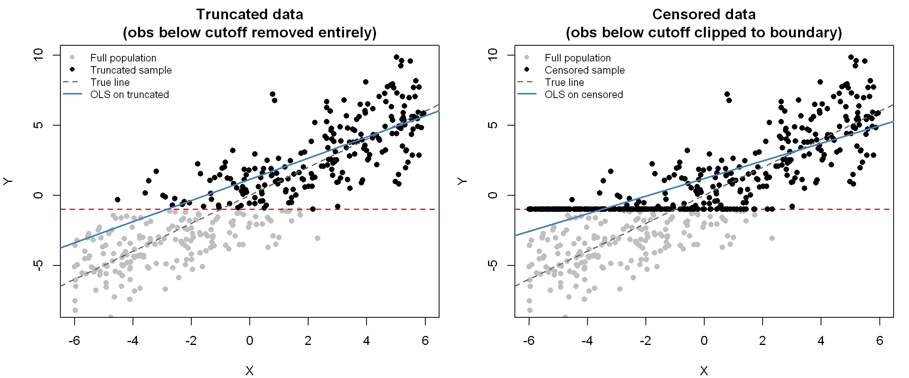
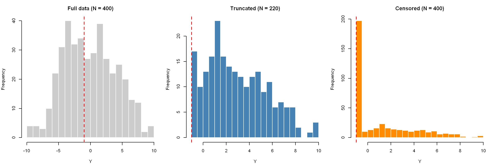
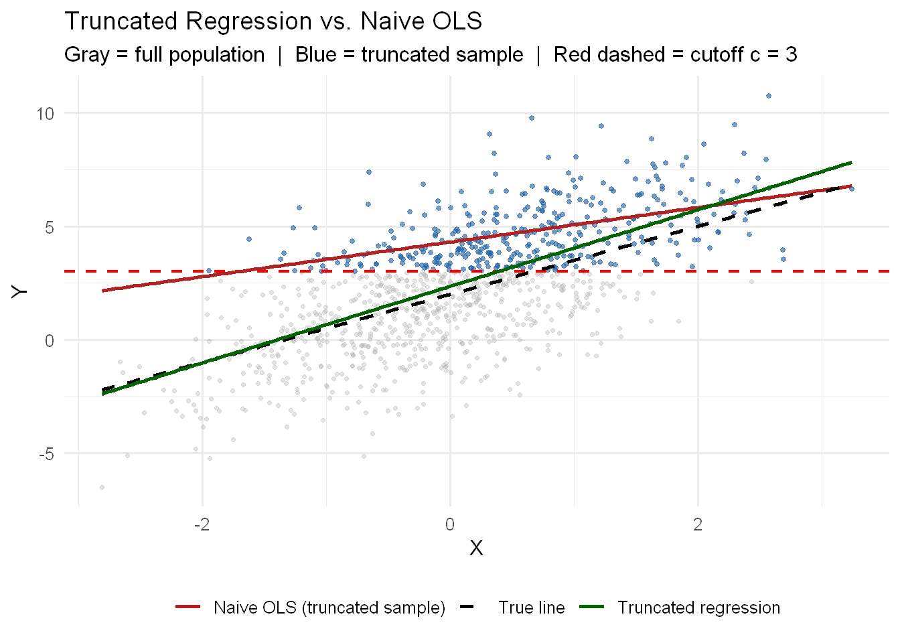
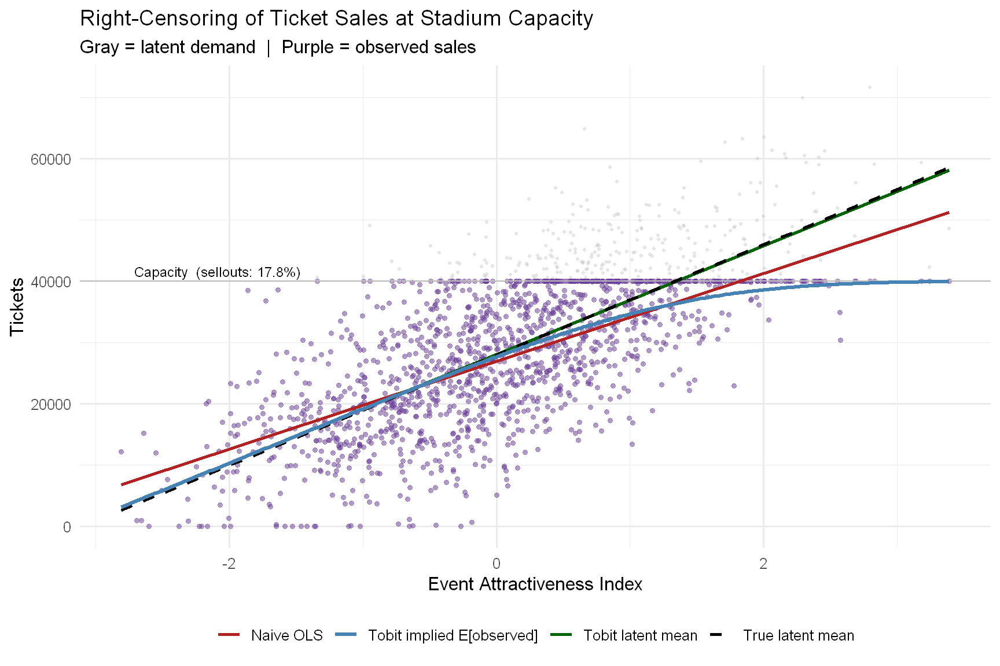
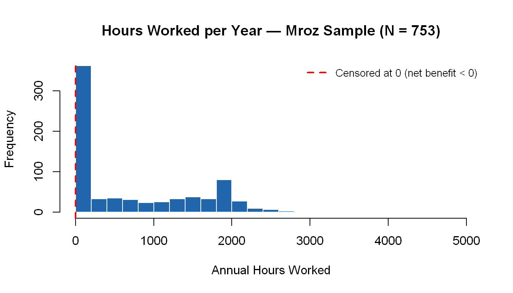

rm(list = ls())
options(
repr.plot.width = 9,
repr.plot.height = 6,
repr.plot.res = 150,
warn = -1
)
packages <- c(
"truncreg", # Truncated regression
"AER", # for lrtest()
"censReg", # censReg() + margEff() for left-censored hours example
"sampleSelection", # Heckman heckit() + Mroz87 data
"wooldridge", # mroz dataset (hours worked)
"haven", # Read .dta files for GATE example
"modelsummary", # Regression tables
"ggplot2", # Plotting
"patchwork", # Combining ggplot panels
"knitr" # kable()
)
invisible(lapply(packages, function(pkg) {
if (!require(pkg, character.only = TRUE, quietly = TRUE)) {
install.packages(pkg, repos = "https://cloud.r-project.org")
require(pkg, character.only = TRUE, quietly = TRUE)
}
}))Limited Dependent Variable Models
Companion Notebook — Truncated Regression, Censored Regression, and Heckman Selection
NYU · Applied Statistics and Econometrics 2
What This Notebook Covers
This notebook is the applied companion to the lecture on Limited Dependent Variable (LDV) models. The lecture builds the theory and intuition; this notebook puts it into code, shows you what the data actually look like, and walks through each model on real and simulated examples.
We cover:
- A visual side-by-side of truncation, censoring, and selection — and why OLS fails in each case
- Truncated regression on simulated data and a real gifted-education dataset
- Censored regression (Tobit) — first on stadium ticket sales (right censoring), then on women’s hours worked (left censoring), including correct marginal effect computation
- Heckman selection — hand-rolled from first principles, then using
heckit(), applied to the Mroz wage data
1 Setup
1.1 Load Required Packages
2 Part I: Seeing the Problem — Truncation, Censoring, and Selection
Before fitting any models, it helps to see the three types of limited data side by side. We’ll generate a single population and then show what each type of data limitation does to it.
2.1 Simulation: One Population, Three Problems
set.seed(42)
N <- 400
beta0_true <- 0
beta1_true <- 1
sigma_true <- 2
cutoff <- -1 # left boundary (truncation / censoring point)
x <- runif(N, min = -6, max = 6)
eps <- rnorm(N, mean = 0, sd = sigma_true)
y_true <- beta0_true + beta1_true * x + eps
full_data <- data.frame(x = x, y = y_true, type = "Full Population")Now we apply the three different data limitations:
# Truncation: observations below the cutoff are entirely gone
keep <- y_true >= cutoff
trunc_data <- data.frame(x = x[keep], y = y_true[keep], type = "Truncated")
# Censoring: observations below the cutoff are clipped to the boundary
y_cens <- ifelse(y_true < cutoff, cutoff, y_true)
cens_data <- data.frame(x = x, y = y_cens, type = "Censored")
cat("Full population: N =", N,
"\nTruncated sample: N =", sum(keep), "(", round(100*mean(!keep)), "% removed)",
"\nCensored sample: N =", N, "(all present;", sum(y_true < cutoff), "clipped to", cutoff, ")")Full population: N = 400
Truncated sample: N = 220 ( 45 % removed)
Censored sample: N = 400 (all present; 180 clipped to -1 )2.2 Visualizing the Three Cases
The scatter plots below show what happens to the regression line in each case. Gray points are the original full population; black points are what remains after the data limitation is applied. The dashed line is the true population relationship; the solid blue line is what OLS fits on the restricted data.
options(repr.plot.width = 12, repr.plot.height = 5, repr.plot.res = 200)
fit_trunc_ols <- lm(y ~ x, data = trunc_data)
fit_cens_ols <- lm(y ~ x, data = cens_data)
fit_full_ols <- lm(y ~ x, data = full_data)
ylims <- c(-8, 10)
par(mfrow = c(1, 2), mar = c(4, 4, 3, 1))
# --- Left panel: Truncated ---
plot(x, y_true, pch = 16, col = gray(0.75),
xlim = c(-6, 6), ylim = ylims,
xlab = "X", ylab = "Y",
main = "Truncated data\n(obs below cutoff removed entirely)")
abline(h = cutoff, col = "red", lty = 2, lwd = 1.5)
points(trunc_data$x, trunc_data$y, pch = 16, col = "black")
abline(beta0_true, beta1_true, lty = 2, lwd = 1.5, col = "gray40")
abline(fit_trunc_ols, col = "steelblue", lwd = 2)
legend("topleft", legend = c("Full population", "Truncated sample",
"True line", "OLS on truncated"),
pch = c(16, 16, NA, NA), lty = c(NA, NA, 2, 1),
col = c(gray(0.75), "black", "gray40", "steelblue"),
lwd = c(NA, NA, 1.5, 2), bty = "n", cex = 0.8)
# --- Right panel: Censored ---
plot(x, y_true, pch = 16, col = gray(0.75),
xlim = c(-6, 6), ylim = ylims,
xlab = "X", ylab = "Y",
main = "Censored data\n(obs below cutoff clipped to boundary)")
abline(h = cutoff, col = "red", lty = 2, lwd = 1.5)
points(cens_data$x, cens_data$y, pch = 16, col = "black")
abline(beta0_true, beta1_true, lty = 2, lwd = 1.5, col = "gray40")
abline(fit_cens_ols, col = "steelblue", lwd = 2)
legend("topleft", legend = c("Full population", "Censored sample",
"True line", "OLS on censored"),
pch = c(16, 16, NA, NA), lty = c(NA, NA, 2, 1),
col = c(gray(0.75), "black", "gray40", "steelblue"),
lwd = c(NA, NA, 1.5, 2), bty = "n", cex = 0.8)
The three histograms below make the shape of the problem even clearer. After truncation the left tail disappears entirely. After censoring all that mass piles up at the boundary value.
options(repr.plot.width = 12, repr.plot.height = 4, repr.plot.res = 200)
par(mfrow = c(1, 3), mar = c(4, 4, 3, 1))
hist(y_true, breaks = 20,
main = paste0("Full data (N = ", N, ")"),
xlab = "Y", col = "gray80", border = "white")
abline(v = cutoff, col = "red", lty = 2, lwd = 1.5)
hist(trunc_data$y, breaks = 20,
main = paste0("Truncated (N = ", nrow(trunc_data), ")"),
xlab = "Y", col = "steelblue", border = "white")
abline(v = cutoff, col = "red", lty = 2, lwd = 1.5)
hist(cens_data$y, breaks = 20,
main = paste0("Censored (N = ", N, ")"),
xlab = "Y", col = "darkorange", border = "white")
abline(v = cutoff, col = "red", lty = 2, lwd = 1.5)
What to notice:
- After truncation, the left tail of the distribution is gone entirely. The remaining distribution is a truncated normal — its mean is shifted upward, which is exactly what pulls OLS up.
- After censoring, everyone is still in the data but values below the cutoff are all stacked at the boundary, producing a spike. The spike drags the OLS line toward zero and flattens the slope.
2.3 Why OLS Fails: The Numbers
model_full_ols <- lm(y ~ x, data = full_data)
model_trunc_ols <- lm(y ~ x, data = trunc_data)
model_cens_ols <- lm(y ~ x, data = cens_data)
msummary(
list(
"True OLS (Full)" = model_full_ols,
"Naive OLS (Truncated)" = model_trunc_ols,
"Naive OLS (Censored)" = model_cens_ols
),
title = "OLS Bias from Truncation and Censoring (True slope = 1.0)",
stars = TRUE,
gof_map = c("nobs", "r.squared")
)| True OLS (Full) | Naive OLS (Truncated) | Naive OLS (Censored) | |
|---|---|---|---|
| + p < 0.1, * p < 0.05, ** p < 0.01, *** p < 0.001 | |||
| (Intercept) | -0.046 | 1.153*** | 1.204*** |
| (0.100) | (0.173) | (0.082) | |
| x | 1.013*** | 0.756*** | 0.628*** |
| (0.028) | (0.051) | (0.023) | |
| Num.Obs. | 400 | 220 | 400 |
| R2 | 0.762 | 0.506 | 0.646 |
The true slope is 1.0. See how much OLS deviates in each case — and remember, this bias does not shrink with more data. It is structural.
3 Part II: Truncated Regression
When observations below (or above) a threshold are completely absent from your data — not zeroed out, but gone — you have truncation. The fix is truncated regression, which accounts for the upward shift in the sample mean using the Inverse Mills Ratio.
3.1 Formal Setup
The true model in the full population is: \[Y_i^* = \beta_0 + \beta_1 X_i + \varepsilon_i, \quad \varepsilon_i \sim N(0, \sigma^2)\]
You only observe \(Y_i^*\) when \(Y_i^* > c\) (left-truncated at cutoff \(c\)). Among the observations you can see, the errors are no longer mean zero — all the negative draws were cut off. The conditional expectation is: \[E[Y_i \mid Y_i > c,\ X_i] = (\beta_0 + \beta_1 X_i) + \sigma \cdot \underbrace{\frac{\phi(\alpha_i)}{1 - \Phi(\alpha_i)}}_{\lambda_i \ =\ \text{IMR}}\]
where \(\alpha_i = (c - \beta_0 - \beta_1 X_i)/\sigma\). The IMR \(\lambda_i\) is always positive, which is why truncation biases the intercept upward. Truncated regression estimates \(\beta\) and \(\sigma\) jointly via maximum likelihood with this correction built in.
3.2 Simulated Example
We use the same data as above but now run the correct model.
# Parameters used to generate the truncated sample
beta0_sim <- 2
beta1_sim <- 1.5
sigma_sim <- 2
cutoff_sim <- 3
n_sim <- 1000
set.seed(123)
x_sim <- rnorm(n_sim, mean = 0, sd = 1)
eps_sim <- rnorm(n_sim, mean = 0, sd = sigma_sim)
y_sim <- beta0_sim + beta1_sim * x_sim + eps_sim
full_sim <- data.frame(x = x_sim, y = y_sim)
keep_sim <- y_sim >= cutoff_sim
trunc_sim <- data.frame(x = x_sim[keep_sim], y = y_sim[keep_sim])
cat("Full sample N =", n_sim, "| Truncated sample N =", sum(keep_sim),
"(", round(100 * mean(!keep_sim)), "% removed)")Full sample N = 1000 | Truncated sample N = 361 ( 64 % removed)# True model (oracle — not available in practice)
model_true <- lm(y ~ x, data = full_sim)
# Naive OLS on the truncated sample
model_ols_trunc <- lm(y ~ x, data = trunc_sim)
# Corrected: truncated regression
model_trunc <- truncreg(y ~ x, data = trunc_sim, point = cutoff_sim, direction = "left")
msummary(
list(
"True Model (Oracle)" = model_true,
"Naive OLS (Truncated)" = model_ols_trunc,
"Truncated Regression" = model_trunc
),
title = "Truncated Regression Recovers the True Parameters",
notes = paste("True: intercept =", beta0_sim, ", slope =", beta1_sim, ", sigma =", sigma_sim),
stars = TRUE,
gof_map = c("nobs")
)| True Model (Oracle) | Naive OLS (Truncated) | Truncated Regression | |
|---|---|---|---|
| + p < 0.1, * p < 0.05, ** p < 0.01, *** p < 0.001 | |||
| True: intercept = 2 , slope = 1.5 , sigma = 2 | |||
| (Intercept) | 2.082*** | 4.307*** | 2.353*** |
| (0.064) | (0.082) | (0.459) | |
| x | 1.676*** | 0.762*** | 1.688*** |
| (0.064) | (0.075) | (0.229) | |
| sigma | 1.860*** | ||
| (0.152) | |||
| Num.Obs. | 1000 | 361 | 361 |
Reading the table: Naive OLS understates the slope. Truncated regression recovers estimates close to the true values. The sigma row in the Truncreg output is the estimated error standard deviation — compare it to the true value of 2.
# Build line data for a clean legend
x_grid <- seq(min(x_sim), max(x_sim), length.out = 200)
lines_df <- rbind(
data.frame(x = x_grid, y = beta0_sim + beta1_sim * x_grid,
Line = "True line"),
data.frame(x = x_grid,
y = coef(model_ols_trunc)[1] + coef(model_ols_trunc)[2] * x_grid,
Line = "Naive OLS (truncated sample)"),
data.frame(x = x_grid,
y = coef(model_trunc)[1] + coef(model_trunc)[2] * x_grid,
Line = "Truncated regression")
)
ggplot() +
geom_point(data = full_sim, aes(x, y), color = "gray70", alpha = 0.35, size = 0.9) +
geom_point(data = trunc_sim, aes(x, y), color = "#2166ac", alpha = 0.55, size = 1.1) +
geom_hline(yintercept = cutoff_sim, color = "red", linetype = "dashed", linewidth = 0.8) +
geom_line(data = lines_df, aes(x = x, y = y, color = Line, linetype = Line), linewidth = 1) +
scale_color_manual(values = c(
"True line" = "black",
"Naive OLS (truncated sample)" = "firebrick",
"Truncated regression" = "darkgreen"
)) +
scale_linetype_manual(values = c(
"True line" = "dashed",
"Naive OLS (truncated sample)" = "solid",
"Truncated regression" = "solid"
)) +
labs(
title = "Truncated Regression vs. Naive OLS",
subtitle = "Gray = full population | Blue = truncated sample | Red dashed = cutoff c = 3",
x = "X", y = "Y",
color = NULL, linetype = NULL
) +
theme_minimal(base_size = 12) +
theme(legend.position = "bottom")
3.3 Real-World Example: GATE Program
Students in a Gifted and Talented Education (GATE) program must have an achievement score of at least 40 to enroll. We observe only those who cleared the bar — a textbook truncated sample.
gate_raw <- read_dta("https://stats.idre.ucla.edu/stat/stata/dae/truncreg.dta")
gate_df <- as.data.frame(gate_raw)
gate_df$prog <- haven::as_factor(gate_df$prog)
# Quick look
datasummary_skim(gate_df, output = "kableExtra")| Unique | Missing Pct. | Mean | SD | Min | Median | Max | |
|---|---|---|---|---|---|---|---|
| id | 178 | 0 | 103.6 | 57.1 | 3.0 | 102.5 | 200.0 |
| achiv | 23 | 0 | 54.2 | 9.0 | 41.0 | 52.0 | 76.0 |
| writing score | 27 | 0 | 54.0 | 8.9 | 31.0 | 56.0 | 67.0 |
gate_ols <- lm(achiv ~ langscore + prog, data = gate_df)
gate_trunc <- truncreg(achiv ~ langscore + prog, data = gate_df,
point = 40, direction = "left")
msummary(
list(
"Naive OLS" = gate_ols,
"Truncated Regression" = gate_trunc
),
title = "GATE Achievement — OLS vs Truncated Regression (cutoff = 40)",
notes = "Truncation point: students must score ≥ 40 to enter the GATE program.",
stars = TRUE,
gof_map = c("nobs")
)| Naive OLS | Truncated Regression | |
|---|---|---|
| + p < 0.1, * p < 0.05, ** p < 0.01, *** p < 0.001 | ||
| Truncation point: students must score ≥ 40 to enter the GATE program. | ||
| (Intercept) | 27.640*** | 11.299+ |
| (3.706) | (6.772) | |
| langscore | 0.463*** | 0.713*** |
| (0.068) | (0.114) | |
| progacademic | 2.973* | 4.063* |
| (1.449) | (2.054) | |
| progvocation | -0.521 | -1.144 |
| (1.727) | (2.670) | |
| sigma | 8.754*** | |
| (0.666) | ||
| Num.Obs. | 178 | 178 |
Interpretation:
langscore: each additional point in language skills raises predicted achievement by roughly 0.71. The effect is statistically significant.progAcademic: students in academic programs score about 4 points higher than those in general programs (the baseline).- Notice that the OLS intercept is biased downward relative to the truncreg estimate — the truncation at 40 means OLS is estimating the relationship among already-high achievers, compressing the intercept.
To test whether prog as a whole matters (a two-degree-of-freedom test), we can compare models:
gate_trunc_noprog <- truncreg(achiv ~ langscore, data = gate_df,
point = 40, direction = "left")
lrtest(gate_trunc_noprog, gate_trunc)The likelihood ratio test strongly rejects the model without prog — program type matters above and beyond language skills.
4 Part III: Censored Regression (Tobit)
Censoring is different from truncation in a crucial way: everyone is in your data. You observe \(X\) values for all observations. But the true \(Y^*\) is hidden for those below (or above) the censoring threshold — you only see the clipped boundary value.
The Tobit model (Tobin 1958) treats the censoring boundary as exactly what it is: a floor or ceiling imposed by a real-world constraint. Behind every zero (or at-capacity observation), there is a latent quantity \(Y^*\) — the net benefit of participating — that the Tobit model tries to recover.
4.1 Example 1: Stadium Ticket Sales (Right Censoring)
This is the cleanest possible illustration of censoring. A stadium has a fixed capacity \(\bar{Q}\). When an event is popular enough that latent demand exceeds capacity, you only observe sellouts — not true demand. The event attractiveness index drives demand, but you can’t see how much demand exceeded capacity on those dates.
This avoids the price–quantity endogeneity problem that arises when using ticket price as the regressor: price is set strategically by the venue, so it is endogenous to demand. Event attractiveness is treated here as exogenous — it reflects factors like the opponent’s ranking, headliner fame, or weather conditions that affect how badly fans want to attend, independently of how the venue priced the seats.
4.1.1 Simulate Latent Demand and Observed Sales
set.seed(123)
n_tick <- 1500
b0_tick <- 28000 # average latent demand at attractiveness = 0
b1_tick <- 9000 # latent demand rises 9,000 per unit of attractiveness
sig_tick <- 9000 # noise in demand
capacity <- 40000 # stadium capacity (right-censoring point)
x_tick <- rnorm(n_tick, mean = 0, sd = 1) # event attractiveness index
eps_tick <- rnorm(n_tick, mean = 0, sd = sig_tick)
q_true <- b0_tick + b1_tick * x_tick + eps_tick
q_true <- pmax(q_true, 0) # demand can't be negative
q_obs <- pmin(q_true, capacity) # what the venue actually sees
full_tick <- data.frame(x = x_tick, q = q_true)
cens_tick <- data.frame(x = x_tick, q = q_obs)
censor_share <- mean(q_true >= capacity)
cat("Censoring share (sellouts):", round(100 * censor_share, 1), "%")Censoring share (sellouts): 17.8 %# Oracle: what we'd see if we could observe true demand even above capacity
model_oracle <- lm(q ~ x, data = full_tick)
# Naive OLS: treats observed (censored) sales as if they were true demand
model_ols_tick <- lm(q ~ x, data = cens_tick)
# Tobit: right-censored at stadium capacity
model_tobit_tick <- tobit(q ~ x, data = cens_tick, right = capacity)
msummary(
list(
"Oracle (Latent Demand)" = model_oracle,
"Naive OLS (Observed Sales)" = model_ols_tick,
"Tobit (Right-Censored)" = model_tobit_tick
),
title = "Ticket Demand — OLS vs Tobit (Right-Censored at Stadium Capacity)",
notes = paste("True: intercept =", b0_tick, ", slope =", b1_tick,
"| Censoring share =", round(100 * censor_share, 1), "%"),
stars = TRUE,
gof_map = c("nobs")
)| Oracle (Latent Demand) | Naive OLS (Observed Sales) | Tobit (Right-Censored) | |
|---|---|---|---|
| + p < 0.1, * p < 0.05, ** p < 0.01, *** p < 0.001 | |||
| True: intercept = 28000 , slope = 9000 | Censoring share = 17.8 % | |||
| (Intercept) | 28108.410*** | 26941.843*** | 28073.476*** |
| (229.110) | (201.520) | (242.293) | |
| x | 8807.245*** | 7166.307*** | 8865.740*** |
| (231.046) | (203.223) | (260.006) | |
| Num.Obs. | 1500 | 1500 | 1500 |
Reading the table:
- Naive OLS substantially understates both the intercept and the slope because every sellout is treated as if demand were exactly 40,000 — pulling the estimated line downward.
- Tobit recovers estimates much closer to the oracle values by correctly modeling the probability of a sellout for each observation.
4.1.2 Visualizing Tobit’s Implied Predictions
The Tobit model gives you two things: (1) a latent linear prediction and (2) an implied nonlinear prediction for observed sales. The nonlinear part comes from the fact that at high attractiveness levels, the model increasingly assigns probability mass to the sellout ceiling.
# Compute Tobit implied E[observed Q | x] over a smooth grid
grid_tick <- data.frame(x = seq(min(x_tick), max(x_tick), length.out = 300))
b0_hat <- coef(model_tobit_tick)[1]
b1_hat <- coef(model_tobit_tick)[2]
sig_hat <- model_tobit_tick$scale
lp <- b0_hat + b1_hat * grid_tick$x
z <- (capacity - lp) / sig_hat # how many sigma-units from ceiling
lam <- dnorm(z) / pnorm(z) # IMR for right censoring
# E[Q_obs | x] = Phi(z) * (lp - sigma*lambda) + [1 - Phi(z)] * capacity
grid_tick$pred_obs <- pnorm(z) * (lp - sig_hat * lam) + (1 - pnorm(z)) * capacity
grid_tick$pred_latent <- lp
# Build line data for legend
x_rng_t <- range(x_tick)
seg_tick <- rbind(
data.frame(x = x_rng_t, y = b0_tick + b1_tick * x_rng_t, Line = "True latent mean"),
data.frame(x = x_rng_t, y = coef(model_ols_tick)[1] +
coef(model_ols_tick)[2] * x_rng_t, Line = "Naive OLS"),
data.frame(x = x_rng_t, y = b0_hat + b1_hat * x_rng_t, Line = "Tobit latent mean")
)
ggplot() +
geom_point(data = full_tick, aes(x, q), color = "gray75", alpha = 0.35, size = 0.7) +
geom_point(data = cens_tick, aes(x, q), color = "#6a3d9a", alpha = 0.45, size = 1.3) +
geom_hline(yintercept = capacity, linetype = "solid", color = "grey", linewidth = .5) +
annotate("text", x = min(x_tick) + 0.1, y = capacity + 1600,
label = paste0("Capacity (sellouts: ", round(100*censor_share, 1), "%)"),
color = "black", hjust = 0, size = 3.2) +
geom_line(data = seg_tick, aes(x, y, color = Line, linetype = Line), linewidth = 1) +
geom_line(data = grid_tick,
aes(x = x, y = pred_obs,
color = "Tobit implied E[observed]",
linetype = "Tobit implied E[observed]"), linewidth = 1.2) +
scale_color_manual(values = c(
"True latent mean" = "black",
"Naive OLS" = "firebrick",
"Tobit latent mean" = "darkgreen",
"Tobit implied E[observed]" = "steelblue"
)) +
scale_linetype_manual(values = c(
"True latent mean" = "dashed",
"Naive OLS" = "solid",
"Tobit latent mean" = "solid",
"Tobit implied E[observed]" = "solid"
)) +
labs(
title = "Right-Censoring of Ticket Sales at Stadium Capacity",
subtitle = "Gray = latent demand | Purple = observed sales",
x = "Event Attractiveness Index", y = "Tickets",
color = NULL, linetype = NULL
) +
theme_minimal(base_size = 12) +
theme(legend.position = "bottom")
The blue curve is particularly important: it is Tobit’s implied prediction for observed ticket sales (what you’d actually use to forecast box-office revenue). Notice how it bends toward the capacity line as attractiveness increases — the model correctly captures the fact that very popular events are likely to sell out, so the marginal effect of attractiveness on observable sales diminishes near capacity.
4.2 Example 2: Women’s Hours Worked (Left Censoring)
This connects directly to the lecture’s net benefit framing. Each woman’s underlying net benefit of working is: the wage she would earn, minus the costs of participating (childcare, commuting, foregone leisure time). If that net benefit is positive, she works and we observe her hours. If it’s negative, the constraint binds and we record zero hours.
data("mroz", package = "wooldridge")
mroz_df <- as.data.frame(mroz)
cat("Total observations:", nrow(mroz_df),
"\nNot in labor force (hours = 0):", sum(mroz_df$hours == 0),
"\n → Censoring share:", round(100 * mean(mroz_df$hours == 0), 1), "%")Total observations: 753
Not in labor force (hours = 0): 325
→ Censoring share: 43.2 %options(repr.plot.width = 7, repr.plot.height = 4, repr.plot.res = 200)
hist(mroz_df$hours, breaks = 30,
main = paste0("Hours Worked per Year — Mroz Sample (N = ", nrow(mroz_df), ")"),
xlab = "Annual Hours Worked",
col = "#2166ac", border = "white")
abline(v = 0, col = "red", lty = 2, lwd = 2)
legend("topright",
legend = c("Censored at 0 (net benefit < 0)"),
col = "red", lty = 2, lwd = 2, bty = "n", cex = 0.85)
hours_eq <- hours ~ nwifeinc + educ + exper + expersq + age + kidslt6 + kidsge6
# Three estimators: Tobit (censReg), OLS on all, OLS on workers only
hours_tobit <- censReg(hours_eq, data = mroz_df)
hours_ols <- lm(hours_eq, data = mroz_df)
hours_ols_w <- lm(hours_eq, data = mroz_df, subset = inlf == 1)
msummary(
list(
"Tobit" = hours_tobit,
"OLS (all obs)" = hours_ols,
"OLS (workers only)" = hours_ols_w
),
title = "Women's Annual Hours — Tobit vs OLS Alternatives",
notes = "Left-censored at 0. 'OLS (workers only)' conditions on participation — see Part IV for why this creates selection bias.",
stars = TRUE,
gof_map = c("nobs")
)| Tobit | OLS (all obs) | OLS (workers only) | |
|---|---|---|---|
| + p < 0.1, * p < 0.05, ** p < 0.01, *** p < 0.001 | |||
| Left-censored at 0. 'OLS (workers only)' conditions on participation — see Part IV for why this creates selection bias. | |||
| (Intercept) | 965.305* | 1330.482*** | 2056.643*** |
| (446.436) | (270.785) | (346.484) | |
| nwifeinc | -8.814* | -3.447 | 0.444 |
| (4.459) | (2.544) | (3.613) | |
| educ | 80.646*** | 28.761* | -22.788 |
| (21.583) | (12.955) | (16.434) | |
| exper | 131.564*** | 65.673*** | 47.005** |
| (17.279) | (9.963) | (14.556) | |
| expersq | -1.864*** | -0.700* | -0.514 |
| (0.538) | (0.325) | (0.437) | |
| age | -54.405*** | -30.512*** | -19.664*** |
| (7.419) | (4.364) | (5.894) | |
| kidslt6 | -894.022*** | -442.090*** | -305.721** |
| (111.878) | (58.847) | (96.450) | |
| kidsge6 | -16.218 | -32.779 | -72.367* |
| (38.641) | (23.176) | (30.361) | |
| logSigma | 7.023*** | ||
| (0.037) | |||
| Num.Obs. | 753 | 753 | 428 |
4.3 Marginal Effects: What the Tobit Coefficient Actually Means
The Tobit coefficient is not the effect of \(X\) on observed hours. It is the effect on the latent net benefit of working \(Y^*\). To get the policy-relevant effect — how much does observed hours change when \(X\) increases by 1 — you need to account for the fact that women with negative net benefit stay at zero regardless of small changes in \(X\).
The effect on observed \(Y\) combines two channels:
- Extensive margin: a higher \(X\) makes more women cross the zero threshold and enter the labor force, contributing hours they previously did not work.
- Intensive margin: conditional on already working, a higher \(X\) shifts hours upward.
Both channels together give the Average Partial Effect (APE):
\[\frac{\partial E[Y_i \mid X_i]}{\partial X_j} \approx \hat{\beta}_j \times \Phi\!\left(\frac{X_i\hat{\beta}}{\hat{\sigma}}\right)\]
averaged over all observations. Because \(\Phi(\cdot) \leq 1\), the APE is always smaller in magnitude than the raw Tobit coefficient.
# Fraction of sample uncensored (in labor force) — used for the approximation
p_uncensored <- mean(mroz_df$inlf)
# Tobit coefficient on education (latent-scale effect)
b_educ_tobit <- coef(hours_tobit)["educ"]
# Approximate marginal effect: beta * Pr(uncensored)
mfx_approx <- b_educ_tobit * p_uncensored
# Average partial effects via margEff() — the correct way for censReg objects
mfx_df <- as.data.frame(margEff(hours_tobit))
me_correct <- mfx_df["educ", 1]
data.frame(
Quantity = c(
"Tobit coeff on educ (effect on Y*)",
"Fraction uncensored",
"Approximate ME on observed hours",
"Average partial effect (margEff)"
),
Value = c(
round(b_educ_tobit, 2),
round(p_uncensored, 3),
round(mfx_approx, 2),
round(me_correct, 2)
)
) |> kable(caption = "Education Effect: Tobit Coefficient vs Marginal Effect on Observed Hours")| Quantity | Value |
|---|---|
| Tobit coeff on educ (effect on Y*) | 80.650 |
| Fraction uncensored | 0.568 |
| Approximate ME on observed hours | 45.840 |
| Average partial effect (margEff) | 48.730 |
What this says: A one-year increase in education raises the latent net benefit of working by 80.6 hours (the Tobit coefficient). But among the full sample, the effect on observed hours is smaller — roughly 48.7 hours — because the women at the margin (near zero hours) don’t all immediately shift into work.
# Full APE table
mfx_out <- round(mfx_df, 3)
colnames(mfx_out) <- "APE"
kable(mfx_out, caption = "Average Partial Effects — Tobit Model for Hours Worked (censReg)")| APE | |
|---|---|
| nwifeinc | -5.326 |
| educ | 48.734 |
| exper | 79.504 |
| expersq | -1.127 |
| age | -32.877 |
| kidslt6 | -540.257 |
| kidsge6 | -9.801 |
Key takeaways from the three-way comparison:
- OLS estimation — whether on the full sample or on workers only — is biased toward zero because it cannot capture the non-constant marginal effects that the Tobit model accounts for.
- The Tobit coefficient estimates have the same sign as OLS and similar patterns of statistical significance; the magnitudes are larger because they are latent-scale effects, not observed-scale effects.
- It is tempting to compare OLS and Tobit magnitudes directly, but this is not informative. Notice that the Tobit coefficient on
kidslt6is roughly twice the OLS coefficient, yet the APE forkidslt6is much more in line with the OLS estimate. The APEs forexperandageare similarly closer to OLS than the raw Tobit coefficients suggest. - The overall effect on \(E[Y \mid X]\) is the sum of an extensive margin effect (how much more likely a woman is to join the labor force as \(X\) increases, times expected hours) and an intensive margin effect (how much expected hours increase for workers already in the labor force, times the probability of participation).
5 Part IV: Heckman Selection Model
Censoring and selection might look similar on the surface — both involve outcomes that are missing for part of the sample — but the mechanism is different, and that difference completely changes the appropriate model.
| Tobit (Censoring) | Heckman (Selection) | |
|---|---|---|
| Who is in the data? | Everyone | Everyone |
| Outcome missing for? | Those below/above a constraint | Those who did not participate |
| Why is it missing? | A real lower/upper bound | A separate participation decision |
| Are the zeros “real”? | Yes — constrained at the boundary | No — the outcome is simply unobserved |
| Example | Hours worked = 0 because net benefit < 0 | Wage is NA because woman didn’t work |
In the Mroz data, hours = 0 is a Tobit problem (Part III). But wage = NA for non-workers is a Heckman problem: wages are missing not because of a constraint, but because the woman chose not to work — and that choice is correlated with what she would have earned.
5.1 The Setup: Mroz87 Data
data("Mroz87", package = "sampleSelection")
Mroz87$kids <- (Mroz87$kids5 + Mroz87$kids618 > 0)
cat("Total women: ", nrow(Mroz87),
"\nWomen who work (lfp=1):", sum(Mroz87$lfp),
"\nNon-workers (wage missing):", sum(Mroz87$lfp == 0))Total women: 753
Women who work (lfp=1): 428
Non-workers (wage missing): 325Of the 753 women in the 1975 PSID sample, 428 worked and have an observed wage. The 325 who didn’t work have no observed wage. If we run OLS on the 428 workers, we are estimating the wage equation for a selected, above-average-earning group — not for all women.
5.2 Step 1: Who Works? The Probit Selection Equation
The first step is to model the participation decision using all 753 women.
selection_eq <- lfp ~ age + I(age^2) + faminc + kids + educ
outcome_eq <- wage ~ exper + I(exper^2) + educ + city
probit_sel <- glm(selection_eq, data = Mroz87, family = binomial(link = "probit"))
msummary(
list("Probit: P(Work)" = probit_sel),
title = "Step 1 — Selection Equation: Who Participates? (N = 753)",
notes = "Exclusion restrictions: 'faminc' (husband's income) and 'kids' appear here but NOT in the wage equation.",
stars = TRUE,
gof_map = c("nobs", "r.squared")
)| Probit: P(Work) | |
|---|---|
| + p < 0.1, * p < 0.05, ** p < 0.01, *** p < 0.001 | |
| Exclusion restrictions: 'faminc' (husband's income) and 'kids' appear here but NOT in the wage equation. | |
| (Intercept) | -4.157** |
| (1.404) | |
| age | 0.185** |
| (0.066) | |
| I(age^2) | -0.002** |
| (0.001) | |
| faminc | 0.000 |
| (0.000) | |
| kidsTRUE | -0.449*** |
| (0.130) | |
| educ | 0.098*** |
| (0.023) | |
| Num.Obs. | 753 |
The exclusion restrictions are faminc (husband’s income) and kids (any children). These variables affect whether a woman works but, conditional on working, should not directly affect her wage. This is what allows Heckman to separately identify the selection process from the wage process.
5.3 Step 2: Hand-Rolling the IMR
To see exactly what Heckman’s correction does, we compute the IMR manually.
# Linear predictor from the probit
Mroz87$z_hat <- predict(probit_sel, type = "link")
# Inverse Mills Ratio: phi(z_hat) / Phi(z_hat)
# This is the "correction factor" that measures how selected the workers are
Mroz87$IMR <- dnorm(Mroz87$z_hat) / pnorm(Mroz87$z_hat)
# Step 2: OLS on workers only, with IMR as an additional regressor
heck_manual <- lm(wage ~ exper + I(exper^2) + educ + city + IMR,
data = Mroz87,
subset = (lfp == 1))
# Naive OLS (workers only, no IMR)
ols_workers <- lm(wage ~ exper + I(exper^2) + educ + city,
data = Mroz87,
subset = (lfp == 1))
msummary(
list(
"Naive OLS (workers only)" = ols_workers,
"Hand-rolled Heckman" = heck_manual
),
title = "Step 2 — Wage Equation: Adding the IMR Correction",
notes = "IMR = phi(z_hat)/Phi(z_hat) computed from the probit in Step 1. A significant IMR coefficient indicates selection bias.",
stars = TRUE,
gof_map = c("nobs", "r.squared")
)| Naive OLS (workers only) | Hand-rolled Heckman | |
|---|---|---|
| + p < 0.1, * p < 0.05, ** p < 0.01, *** p < 0.001 | ||
| IMR = phi(z_hat)/Phi(z_hat) computed from the probit in Step 1. A significant IMR coefficient indicates selection bias. | ||
| (Intercept) | -2.561** | -0.971 |
| (0.929) | (2.039) | |
| exper | 0.032 | 0.021 |
| (0.062) | (0.063) | |
| I(exper^2) | -0.000 | 0.000 |
| (0.002) | (0.002) | |
| educ | 0.481*** | 0.417*** |
| (0.067) | (0.099) | |
| city | 0.449 | 0.444 |
| (0.318) | (0.318) | |
| IMR | -1.098 | |
| (1.253) | ||
| Num.Obs. | 428 | 428 |
| R2 | 0.125 | 0.126 |
The return to education (educ) falls from 0.481 (OLS) to 0.417 (Heckman). This is consistent with positive selection on education: more educated women are both more likely to work and higher earners, so the working sample over-represents them. OLS on workers inflates the education coefficient by mixing the true wage return with this selection effect. Heckman strips out the selection and recovers a lower, cleaner estimate of the return.
The IMR coefficient \(\hat{\delta}\) is the key diagnostic for whether selection bias is present and in which direction.
Recall the setup: we observe a woman’s wage offer \(W_i^o\) only when it clears her reservation wage \(W_i^r\). Women with high offers are more likely to clear that bar, so the wages we observe over-represent high earners. The IMR corrects for exactly this — it measures, for each woman, how surprising it is that she ended up in the working sample given her characteristics.
Here, \(\hat{\delta} = -1.10\) but is insignificant (\(p > 0.1\)), which tells us two things: the direction of selection is negative, but we cannot reject the null of no selection bias in this sample.
The sign carries the economic story:
- Negative \(\hat{\delta}\) (this case): conditional on her observed characteristics, a woman who was unexpectedly likely to work tends to earn an unexpectedly low wage. In the offer/reservation framework, this means some women work not because their offer is particularly high, but because their reservation wage is particularly low — perhaps their husband earns little, or childcare costs are low. The observed wage sample slightly over-represents these women, and the IMR correction adjusts upward.
- Positive \(\hat{\delta}\): the opposite — women with high unobserved earning potential are also the ones most likely to clear their reservation wage. OLS on workers understates the average wage offer in the full population.
- Insignificant \(\hat{\delta}\): the correlation between the offer and reservation wage unobservables is not detectable in the data. Heckman and naive OLS give similar estimates, and the cost of Heckman — wider standard errors, dependence on exclusion restrictions — may not be worth paying.
Note also that standard errors widen noticeably after adding the IMR. This is expected: the IMR is a generated regressor estimated from the probit, not directly observed, which introduces additional variance that OLS does not account for. For inference, heckit(method = "ml") is preferred since it estimates both equations jointly and produces correct standard errors.
5.4 Using heckit() — Two-Step and MLE
library(stargazer)
heck_2step <- heckit(selection_eq, outcome_eq, data = Mroz87, method = "2step")
heck_ml <- heckit(selection_eq, outcome_eq, data = Mroz87, method = "ml")
stargazer(
ols_workers, heck_2step, heck_ml,
column.labels = c("OLS (workers only)", "Two-step", "MLE"),
column.separate = c(1, 1, 1),
dep.var.labels = rep("wage", 3),
dep.var.caption = "Dependent variable:",
type = "html",
title = "Heckman Selection — Outcome Equation, All Estimators",
notes = c(
"Two-step: hand-rolled IMR (λ̂) added as regressor in Stage 2.",
"MLE: jointly estimates selection and outcome equations.",
"Exclusion restrictions: faminc and kids in selection equation only."
),
notes.align = "l",
star.cutoffs = c(0.1, 0.05, 0.01),
star.char = c("+", "*", "**", "***")
)| Dependent variable: | |||
| wage | wage | ||
| OLS | Heckman | ||
| selection | |||
| OLS (workers only) | Two-step | MLE | |
| (1) | (2) | (3) | |
| exper | 0.032 | 0.021 | 0.028 |
| (0.062) | (0.062) | (0.062) | |
| I(exper2) | -0.0003 | 0.0001 | -0.0001 |
| (0.002) | (0.002) | (0.002) | |
| educ | 0.481** | 0.417** | 0.457** |
| (0.067) | (0.100) | (0.073) | |
| city | 0.449 | 0.444 | 0.447 |
| (0.318) | (0.316) | (0.316) | |
| Constant | -2.561** | -0.971 | -1.963 |
| (0.929) | (2.059) | (1.198) | |
| Observations | 428 | 753 | 753 |
| R2 | 0.125 | 0.126 | |
| Adjusted R2 | 0.117 | 0.116 | |
| rho | -0.343 | ||
| Inverse Mills Ratio | -1.098 (1.266) | ||
| Residual Std. Error | 3.111 (df = 423) | ||
| F Statistic | 15.077** (df = 4; 423) | ||
| Note: | p<0.1; p<0.05; p<0.01 | ||
| Two-step: hand-rolled IMR (λ̂) added as regressor in Stage 2. | |||
| MLE: jointly estimates selection and outcome equations. | |||
| Exclusion restrictions: faminc and kids in selection equation only. | |||
What to compare:
- The hand-rolled Heckman and
heckit(method = "2step")produce identical point estimates — they implement the same two-step procedure. The only difference is thatheckitapplies a small degrees-of-freedom correction to the standard errors. - MLE is more efficient than two-step when joint normality holds, but more sensitive to misspecification. In practice, if the two-step and MLE estimates differ substantially, treat that as a warning sign about the distributional assumption.
5.5 Mistake: Heckman Without a Defensible Exclusion Restriction
library(stargazer)
bad_sel_eq <- lfp ~ age + I(age^2) + educ + exper + I(exper^2) + city
bad_out_eq <- wage ~ exper + I(exper^2) + educ + city
heck_bad <- heckit(bad_sel_eq, bad_out_eq, data = Mroz87, method = "2step")
heck_good <- heckit(selection_eq, outcome_eq, data = Mroz87, method = "2step")
stargazer(
heck_bad, heck_good,
column.labels = c("Bad Heckman (no exclusion)", "Good Heckman (with exclusion)"),
column.separate = c(1, 1),
dep.var.labels = rep("wage", 2),
dep.var.caption = "Dependent variable:",
type = "html",
title = "Mistake 4: Heckman Without a Defensible Exclusion Restriction",
notes = c(
"Bad spec: same variables in both equations — identification relies only on probit nonlinearity.",
"Good spec: faminc and kids excluded from wage equation — genuine exclusion restrictions.",
"Compare IMR standard errors: they explode without a valid exclusion restriction."
),
notes.align = "l",
star.cutoffs = c(0.1, 0.05, 0.01),
star.char = c("+", "*", "**", "***")
)| Dependent variable: | ||
| wage | ||
| Bad Heckman (no exclusion) | Good Heckman (with exclusion) | |
| (1) | (2) | |
| exper | 0.138 | 0.021 |
| (0.108) | (0.062) | |
| I(exper2) | -0.002 | 0.0001 |
| (0.003) | (0.002) | |
| educ | 0.550** | 0.417** |
| (0.090) | (0.100) | |
| city | 0.369 | 0.444 |
| (0.331) | (0.316) | |
| Constant | -5.061* | -0.971 |
| (2.304) | (2.059) | |
| Observations | 753 | 753 |
| R2 | 0.128 | 0.126 |
| Adjusted R2 | 0.117 | 0.116 |
| rho | 0.428 | -0.343 |
| Inverse Mills Ratio | 1.387 (1.162) | -1.098 (1.266) |
| Note: | p<0.1; p<0.05; p<0.01 | |
| Bad spec: same variables in both equations — identification relies only on probit nonlinearity. | ||
| Good spec: faminc and kids excluded from wage equation — genuine exclusion restrictions. | ||
| Compare IMR standard errors: they explode without a valid exclusion restriction. | ||
Why it’s wrong: Without an exclusion restriction, Heckman identification comes only from the nonlinearity of the probit (the fact that \(\Phi(\cdot)\) is not linear). This is extremely fragile in practice — the IMR becomes nearly collinear with the regressors in the wage equation, standard errors explode, and the IMR coefficient is unreliable. Always find and defend a genuine exclusion restriction: a variable that shifts participation but does not directly affect the outcome.
6 Summary and Key Takeaways
6.1 What We Estimated
| Model | Dataset | Research Question | Key Finding |
|---|---|---|---|
| Truncated regression | GATE program | Achievement ~ language skills, program type | Academic program ≈ +4 pts; language skills significant |
| Tobit (right-censored) | Stadium ticket sales | Latent demand ~ event attractiveness | OLS understates the slope by ~40% |
| Tobit (left-censored) | Mroz hours worked | Hours ~ educ, exper, kids | Education APE ≈ 49 hrs; roughly 60% of the raw Tobit coefficient |
| Heckman selection | Mroz87 wages | Wage ~ educ, exper (for all women) | Return to education shifts vs. naive OLS; IMR not significant here |
7 Further Reading
Textbooks:
- Greene, W. H. (2018). Econometric Analysis (8th ed.). Pearson. [Chapter 19: LDV Models]
- Wooldridge, J. M. (2010). Econometric Analysis of Cross Section and Panel Data (2nd ed.). MIT Press. [Chapter 17: Tobit, Chapter 19: Sample Selection]
Foundational Papers:
- Tobin, J. (1958). “Estimation of Relationships for Limited Dependent Variables.” Econometrica, 26(1), 24–36.
- Heckman, J. J. (1979). “Sample Selection Bias as a Specification Error.” Econometrica, 47(1), 153–161.
- Mroz, T. A. (1987). “The Sensitivity of an Empirical Model of Married Women’s Hours of Work to Economic and Statistical Assumptions.” Econometrica, 55(4), 765–799.
R Resources: